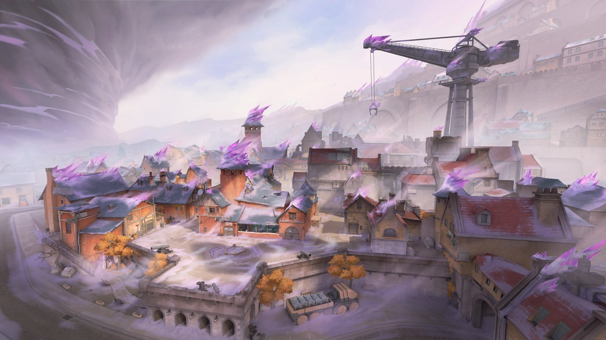
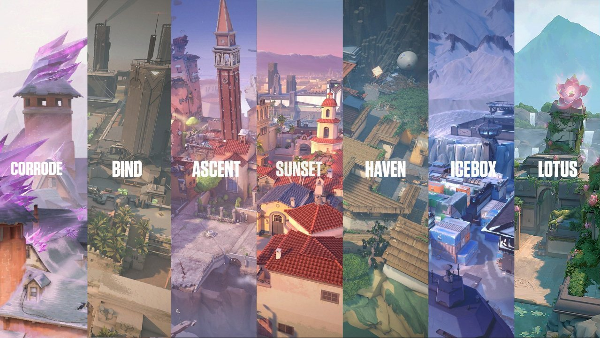

RETAKE.LR
Comunidad
Noticias
Staff
Actualizaciones
RETAKE UNLaR
Login
Nueva actualizacion! Parche 11.00
Nuevo mapa: Corrode

Buffs y nerfs
Buffs
Nerfs
Waylay - Refracción
Tiempo mínimo reducido de 0.5 s a 0.35 s
Tiempo máximo reducido de 3 s a 2 s
Tiempo para desequipar reducido de 1.0 s a 0.8 s
Demora tras reactivación reducida de 0.1 s a 0.05 s
Waylay - Velocidad de la Luz
Demora al desequipar reducida de 0.8 s a 0.6 s
Waylay - Saturación
Tiempo de carga reducido de 0.75 s a 0.6 s
Tamaño aumentado de 10 m a 12 m
Reyna - La Mirada
Vida reducida de 100 a 80
Se añadieron confirmaciones visuales y sonoras al impactar
Neon - Electrorrebote
Tiempo de carga aumentado de 0.8 s a 1.0 s
Phoenix - Destello en Curva
Tiempo de carga aumentado de 0.5 s a 0.6 s
Rotacion de mapas en clasificatorias
